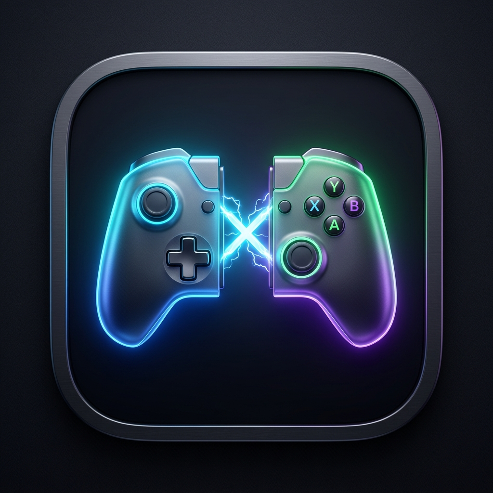

CrossCoop is built on complete symmetry. You aren't limited to one-direction installs: from any browser, you can 1-click download directly into Nucleus Co-op or 1-click convert & install into PartyDeck. Browse the 896+ game library, import unofficial scripts, and export in either format!
1-click direct download to both
Full SplitScreen.Me library
Lenient .js / .zip / .nc parser
Controller masking & port checks
Every screen in CrossCoop provides direct installation and export options for both programs. Whether you are on Linux preparing games for PartyDeck or setting up handlers for Nucleus Co-op on Windows, you are in total control:
handler.js straight to nucleus_coop/handlers/.
.js scripts or complete .zip packages to drop onto any Windows machine.
.pd2 packages or handler.json manifests to share with other Linux gamers.
Native PartyDeck repositories currently list only about 10 verified handlers. CrossCoop integrates native in-app browsers for BOTH ecosystems, giving you immediate access to 896+ games:
Browse and search all 896+ games with interactive column sorting (Title, Downloads, Players, Status). Download official packages directly into Nucleus Co-op, or convert and install them into PartyDeck with one click!
Browse official PartyDeck configs and live GitHub issue submissions. Install them directly to PartyDeck, or convert and install them into your local Nucleus Co-op handlers directory with one click!
Not all handlers are official or follow strict syntax conventions. Have a custom script from Discord, Reddit, or SplitScreen.Me forums? Click the "📥 Import from Local Files" button. CrossCoop's resilient parser automatically detects executables, Steam AppIDs, Goldberg LAN configurations, and launch flags from loose, unconfirmed code snippets (.js, .zip, .nc, .json) — and lets you install to Nucleus or PartyDeck!
The pioneer Windows multi-instance tool boasting over 896 community handlers. Emulates multiple players locally with input hooks, window tiling, and symlinked profiles.
The modern split-screen launcher designed specifically for Linux, Nobara, and Steam Deck. Leverages Gamescope for seamless window compositing and Bubblewrap (`bwrap`) for hardware controller isolation.
Split-screen multi-instance gaming can fail due to port collisions, controller leaks, or missing window arguments. CrossCoop performs an intensive 8-phase audit before launching any game:
/dev/input/ gamepads and verifies Bubblewrap masking.
CrossCoop runs natively on Nobara Linux, Fedora, SteamOS, and any modern Linux desktop with Python 3 and PyQt6.
Run directly from your terminal or desktop shortcut without installation.
Clone the latest repository source code to track updates:
git clone https://github.com/korgangames/CrossCoop.git
Check the releases page for tagged versions, changelogs, and prebuilt bundles.